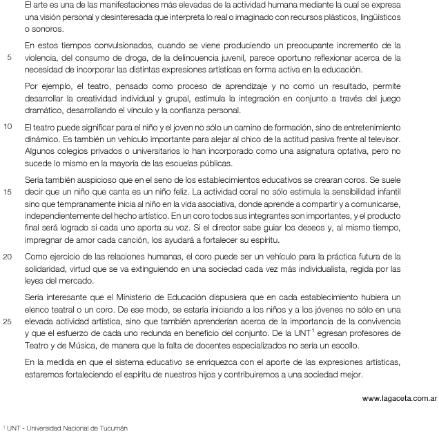

El texto defiende el arte como una asignatura a ser incorporada en los establecimientos educativos.
El argumento más abarcador utilizado por el autor para justificar tal incorporación es:
(A) Por ejemplo, el teatro, pensado como proceso de aprendizaje y no como un resultado, (l. 7)
(B) Algunos colegios privados o universitarios lo han incorporado como una asignatura optativa, (l. 12)
(C) En un coro todos sus integrantes son importantes, y el producto final será logrado si cada uno aporta su voz. (l. 17-18)
(D) aprenderían acerca de la importancia de la convivencia y que el esfuerzo de cada uno redunda en beneficio del conjunto. (l. 25-26)
Alternativa correta: (D)
Segundo o autor do texto, tanto o teatro como o coro são disciplinas que podem ajudar o aluno a se integrar à sociedade, já que exigem um trabalho em conjunto. A frase que abarca ambas as disciplinas se encontra no penúltimo parágrafo. As demais opções se referem exclusivamente ao teatro ou ao coro.